Limes Redesign
Una rivista italiana di geopolitica, anche online. Dalla brand identity al prototipo, passando per la ricerca.

Il progetto
La qualità di un contenuto non è indipendente dalla qualità della sua interfaccia.
Limes, fondata nel 1993 da Lucio Caracciolo, è una rivista di geopolitica del gruppo GEDI. Lavoro tra editoria e design, e credo che chiunque maneggi le parole per lavoro debba sporcarsi le mani con la grafica.
Limes ha contenuti di altissimo livello, ma il sito non li traduce: l’impianto grafico è datato, la navigazione poco chiara, la gerarchia debole. E c’è un pubblico giovane, quello della Scuola di Limes, che trova una piattaforma lontana dalle sue abitudini.
Mission
Offrire strumenti di lettura del mondo contemporaneo che vadano oltre la cronaca, per capire le logiche profonde di conflitti e alleanze.
Vision
Diffondere una cultura geopolitica in Italia e costruire una comunità di lettori capaci di interpretare il mondo con più consapevolezza.
01 · Il nuovo sistema visivo
Il simbolo era già lì
Cercavo qualcosa già presente nel sistema visivo di Limes, ma mai elevato a simbolo. L’ho trovato nelle mappe parlanti di Laura Canali.
Le mappe usano da sempre un marker preciso: tre cerchi concentrici con un punto al centro, il bull’s-eye marker della cartografia. L’ho semplificato e l’ho messo al posto del puntino della i di Limes. Il logotipo è in Cardo, un serif umanistico pensato per la lettura lunga.
02 · Palette
Distinguere senza decorare
Bianco e blu notte definiscono lo spazio della lettura, il grigio gestisce la gerarchia. L’arancione, evoluzione di quello originale, è l’accento della rivista. Il blu persiano è solo della Scuola: segnala un ambiente diverso.
03 · Tipografia
Una coppia che non si sovrappone mai
Neue Haas Grotesk · navigazione e titoli
Il mondo oggi
Discende dall’Helvetica, con proporzioni più raffinate e più leggibile a piccole dimensioni: autorevolezza senza pesantezza.
Cardo · logo e testi
Le conseguenze (in)attese
Un serif umanistico per la lettura accademica di lunga durata. Quando l’utente vede Haas sa che sta navigando, quando vede Cardo sa che sta leggendo.
04 · Icone
Poche, chiare, tutte uguali
05 · Social
Lo stesso sistema, fuori dal sito
Instagram · Scuola di Limes
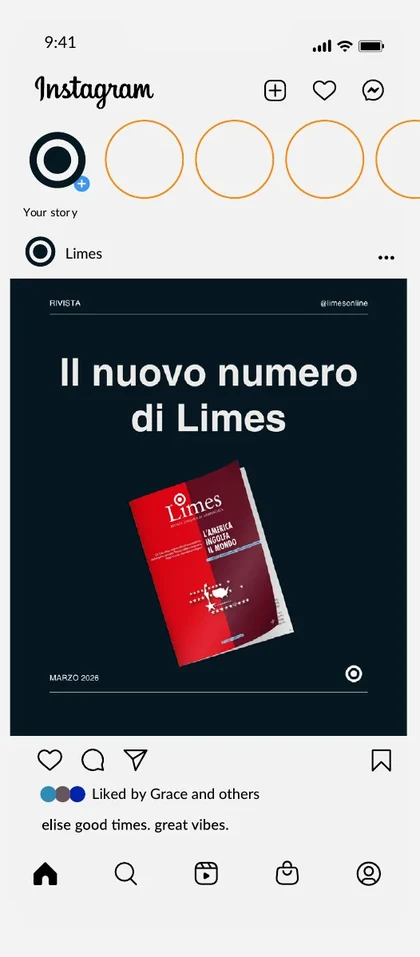
YouTube
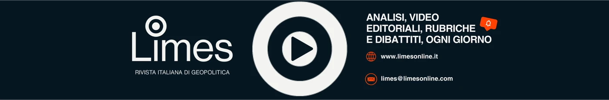
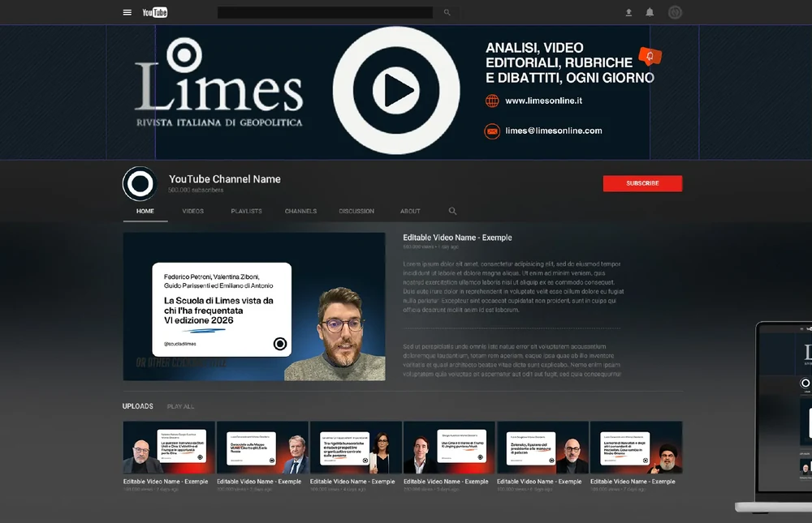
06 · Discovery
Autorevole per chi c’era, chiaro per chi arriva
Due esigenze complementari: mantenere l’autorevolezza per il lettore storico e offrire un’esperienza digitale coinvolgente ai nuovi lettori.
Cosa non funzionava
Paywall invisibile, pubblicità invasiva, doppia navigazione tra header e hamburger.
Palette incoerente, bottoni diversi, nessuna icona.
Niente preferiti, tempo di lettura o dark mode; l’abbonamento porta fuori dal sito.
Contrasti sotto i minimi, tastiera incompleta, componenti muti per gli screen reader.
Competitor
Limes si distingue per la profondità analitica e per la cartografia, quasi unica tra i competitor, ma senza mappe interattive. Il paywall è soft e non dichiarato in homepage. Mancano ricerca con filtri, dark mode, ascolto degli articoli, tempo di lettura e preferiti.

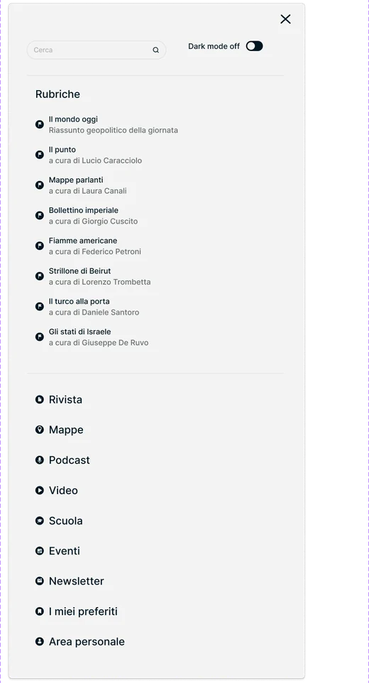
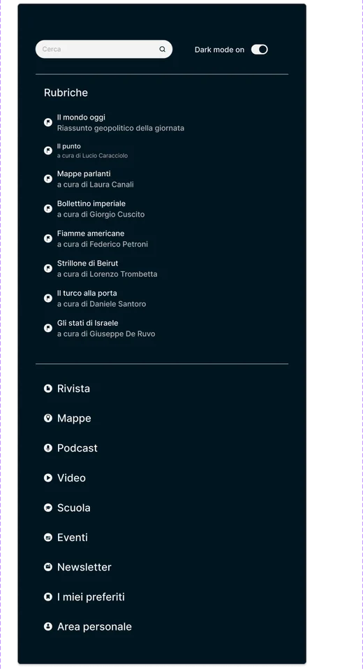
07 · Wireframe
Prima la struttura
Homepage, chi siamo, articolo libero e a pagamento, rivista, scuola, mappe e carte: ogni pagina in desktop e mobile, poi il wireflow del percorso di abbonamento.


08 · UI kit
Pochi componenti, usati ovunque
Bottoni con quattro stati, interruttore dark mode, schede, copertine, video, abbonamenti e mappe con zoom. Ogni elemento esiste una volta sola e si ripete in tutte le pagine.
Bottoni e interruttore
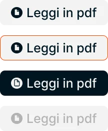
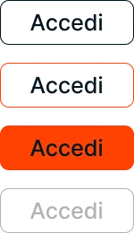
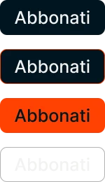
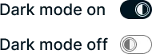
Schede redazione
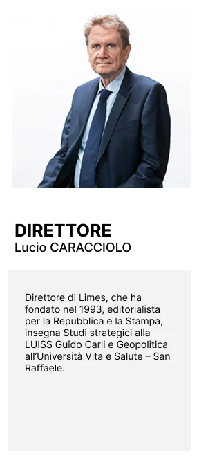
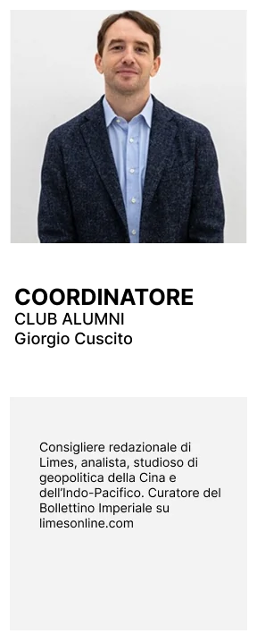
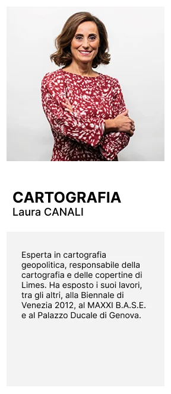
Copertine della rivista
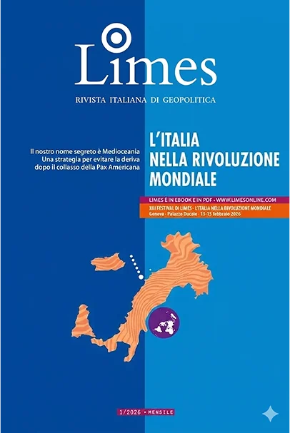
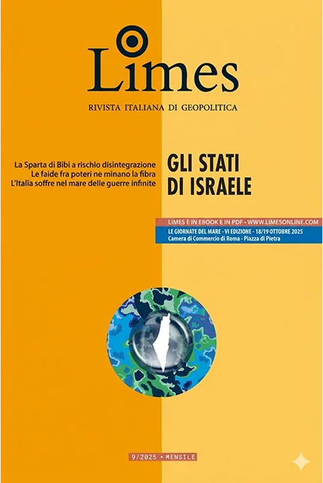
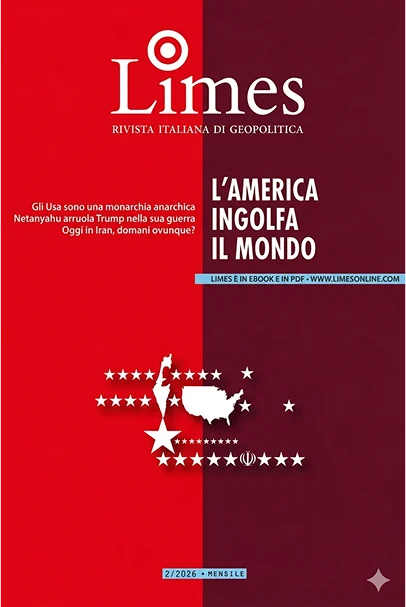
Card video
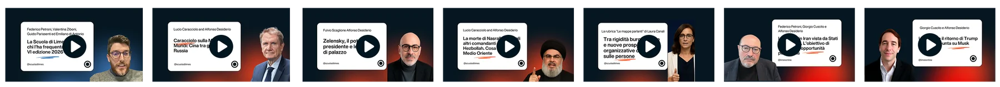
Abbonamenti
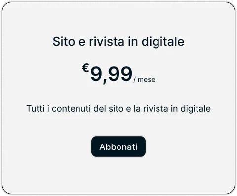
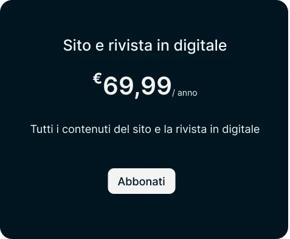
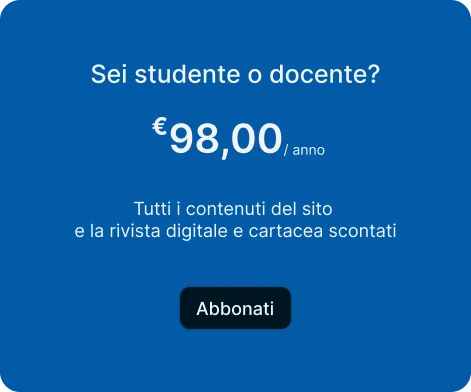
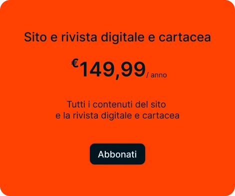
09 · Prototipi
La chiarezza non è il contrario della profondità
Sei pagine navigabili, dalla home all’abbonamento. Il paywall diventa esplicito ma non aggressivo; l’abbonamento resta dentro il sito.

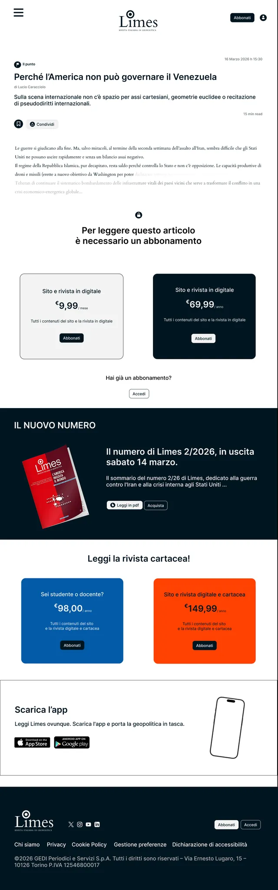
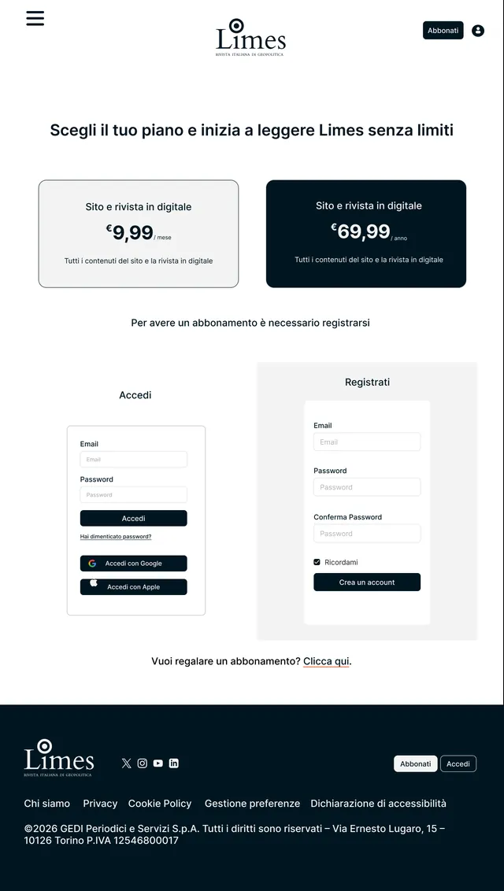
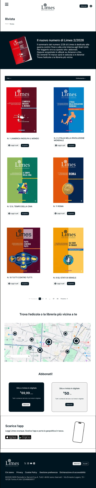
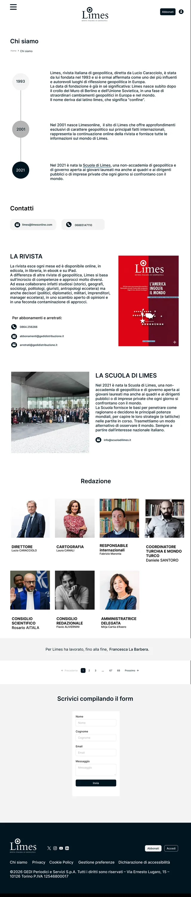
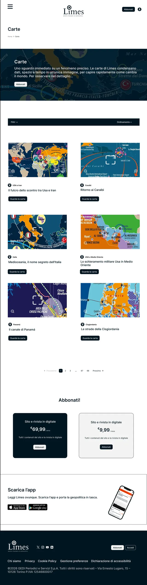
10 · User test
Si capisce cosa è gratis?
Test remoto e senza moderatore su Maze, sul prototipo mobile: navigazione libera e due task. Sedici partecipanti, dodici in linea con i criteri.
- Lucchetto non percepito. Due utenti pensano che tutto il sito sia a pagamento.
- Dopo l’abbonamento. Non è chiaro se sia ricorrente e come disdire.
- Notifiche. Un utente chiede come sarà avvisato delle nuove uscite.
Le modifiche non stravolgono l’architettura. L’icona del lucchetto è affiancata dall’etichetta «SOLO ABBONATI», il riepilogo ordine spiega ricorrenza e disdetta, e la conferma porta all’articolo che aveva motivato l’acquisto.

Riepilogo
Il design al servizio della geopolitica
Limes produce analisi di altissimo livello, ma le consegnava in una piattaforma che non era all’altezza. Il sistema visivo è coerente, la navigazione semplificata, il checkout interno al sito, il paywall esplicito.
Nascono funzioni nuove: dark mode, salvataggio, condivisione, ascolto degli articoli e zoom sulle carte. Resta da sviluppare l’app, con un’esperienza distinta dal sito mobile ma coerente con esso.